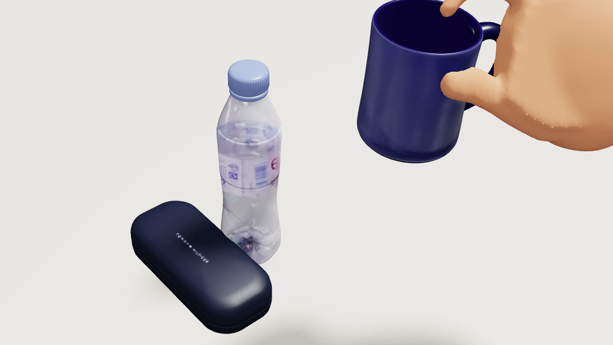
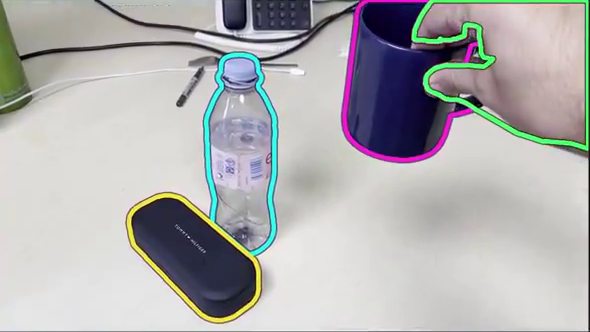
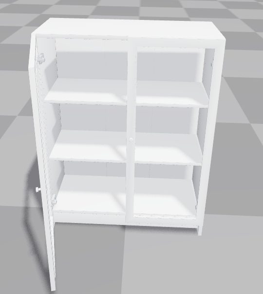
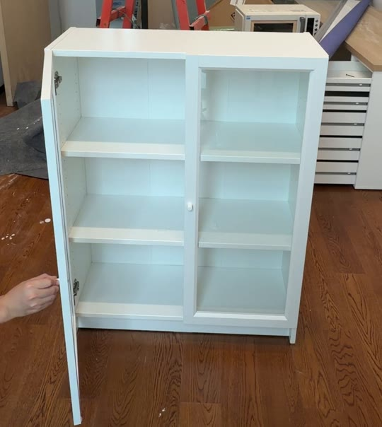
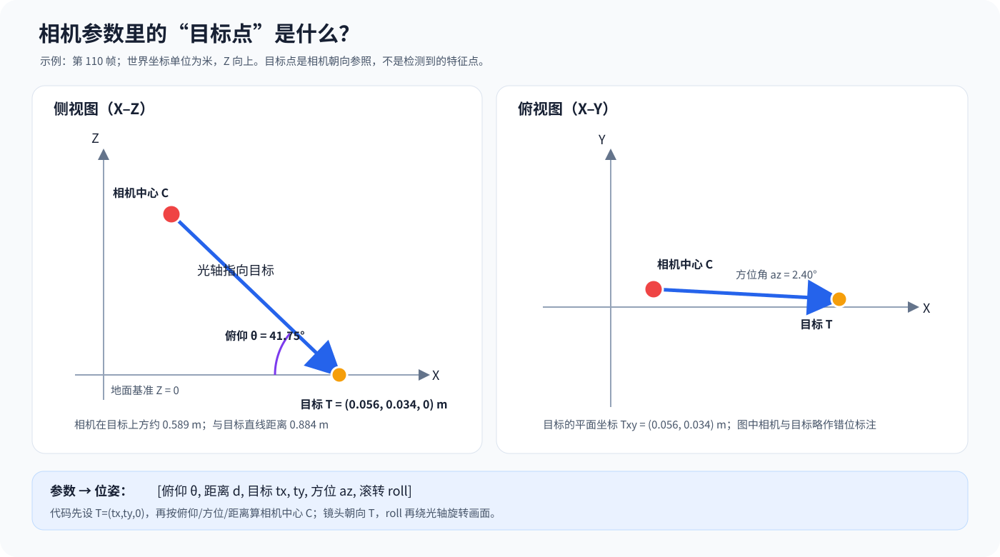

结果总览
先看结果，再看方法。两个实例、同一套四件套证据：4D 视频拖动对照 · 3D 建模拖动对照 · 特征点轨迹 · 点云与相机轨迹。
1.1 桌面三物体
223 帧 · 30 fps · 7.43 s ｜ 源面板 590×332 ｜ 相机 f = 850 源像素、主点 (295, 166) ｜ 杯形 8 参数
杯口内缘 1,637 观测 / 209 帧 ｜ 静态纹理 271 条 · 36,062 观测（留出 54 条，残差 0.180 源像素/帧）
4D · 视频拖动对照
3D · 建模拖动对照


4D · 特征点轨迹
3D · 点云与相机轨迹
1.2 储物柜 item_001
221 帧 · 59.95 fps · 3.69 s ｜ 1080×1920 竖屏 ｜ 相机做 SE(3) 三次样条修正 ｜ 静态点留出 20%
柜体 182 个封闭网格固定 ｜ 装配校正 +14.97 mm ｜ 关闭段源帧 0–99 / 204–220 ｜ 门角 C² 样条，最大拟合开角 73.153°
一段 221 帧的竖屏交互视频（1080×1920，平均 59.95 fps，约 3.69 秒），记录左门关闭 → 打开 → 关闭的完整动作，配合一份已建好的柜体模型。解码处理了 MOV 的 −90° 显示旋转；尺度由 0.8 m 柜宽与焦距先验固定；建模目录里的旧力矩演示没有作为拟合观测。
4D · 视频拖动对照
3D · 建模拖动对照


4D · 特征点轨迹
3D · 点云与相机轨迹
总体思路与架构逻辑
先看输入、输出与整体工作链路；再拆开两个实例共用的同一条骨架——只更换观测层、模型层与轨迹参数化。定位是模型驱动的单目重构，不是 NeRF / 3D Gaussian Splatting，也不是稠密深度重建。
输入
两条单目视频
- 桌面三物体：223 帧 · 30 fps · 7.43 s（推文原片 ↗）
- 储物柜柜门：221 帧 · 59.95 fps · 3.69 s（竖屏交互视频）
- 单目、无标尺、无深度传感器
输出
可编辑、可回放、可复核的 4D 场景
- 三维几何 + 逐帧相机位姿 + 连续运动轨迹
- Newton 运动学回放；Blender 渲染与资产处理；USD / GLB 可编辑导出
- 指标、参数与产物落盘，便于复核
核心功能
二维观测 → 可微投影 → 联合求解 → 运动学回放
- 轮廓距离场、杯口内缘、静态纹理轨迹、门角点四类观测
- 几何／相机／运动共享一套参数，分阶段放开变量
- 保留观测与渲染产物，便于复核拟合与投影接口
2.1 三部分：相机、几何、4D
整条链路按“谁在被求解”拆成三部分，后面三章依次展开：
Part 1 · 03
相机姿态求解 用桌面静止纹理与储物柜不透明框角点，约束六个相机参数，得到全片位姿。Part 2 · 04
物体 3D 几何重建 几何重建的完整内容收在另一篇专文里，本节只给入口。Part 3 · 05
4D 重建 · 可微分渲染 连续运动用 C² 样条；把几何、相机、运动绑在一条像素预测上求导，分阶段放开变量。工作由两路观测汇入同一套场景优化：静态纹理轨迹约束相机与稀疏几何，物体的二维观测约束参数化模型及其运动；收敛后在 Newton 中运动学回放，并从模型表面采样点云作空间检查。这里的点云不是稠密深度重建结果，而是稀疏视觉点与模型表面采样的可视化表达。
核心链路不是“精细建模后直接求轨迹”，而是：合理模型初始化 → 多种二维观测 → 相机／形状／运动联合校正 → 固定可信变量细化 → 用独立渲染端核对投影接口。
相机姿态求解
把相机求解拆成一条可以追踪的链：先得到静态点的图像轨迹，再用可微投影计算误差，最后把误差梯度传回相机轨迹参数。
3.1 先准备观测：哪些点能告诉我们相机在动
相机运动要靠世界里不动的东西来判断：桌面纹理、柜体不透明边框上的稳定角点都可以；杯子和手会自行移动，不能当作静态背景。桌面实例先在允许区域检测纹理角点，再用光流跨帧跟踪；动态物体、彩色描边、画面边缘和明显遮挡区会被排除。跟踪误差过大、运动不一致或持续时间太短的轨迹会被丢弃，约五分之一完整轨迹留出作检查。
同一静态点在画面里移动，不是它自己在桌面上跑，而是相机换了观察位置。如果候选相机运动预测出的像素轨迹与视频跟踪轨迹不一致，就会产生重投影误差。许多点在不同画面位置、不同帧上的轨迹一起比较，便能约束相机的运动。它们提供的是二维像素位置，不是直接测得的深度。
要做三维投影，优化器还需要每个静态点的初始三维位置：背景点先按初始相机视线落到参考平面；瓶子或盒子上的静态点借助已有模型表面初始化。随后相机与这些点可在重投影误差下联合调整，并由先验限制不合理漂移。这些深度是带先验的估计，不是由单目纹理直接测出的真值。这也是为什么相机位姿只能说与观测和先验相一致，不能仅凭单目视频宣称唯一真实解。
3.2 相机用什么变量表示
每帧基础相机写成六个直观参数：俯角 θ、距离 d、地面参考点坐标 tx/ty、方位角 az、滚转角 roll。参考点 T=(tx,ty,0) 是相机的瞄准点（look-at point），不是镜头对焦的焦点，也不一定是某个物体的中心。给定这六个数，几何关系就能算出相机中心 E 和朝向矩阵 R。
需要区分“用什么表示相机”和“优化器实际改什么”。V5 把上一阶段的逐帧六参数轨迹作为固定基线；优化器只学习一个全片共享的 6 维偏置 g，以及一组低频三次 B 样条控制点 c。每帧参数为 pt=ptbase+g+B(t)c（各维按尺度换算）。因此它不是逐帧直接优化 XYZ+欧拉角/四元数，也不是直接做 SE(3) 李代数增量；平滑的低频修正限制了相机逐帧乱动。

3.3 相机的微分链：误差如何变成位姿更新
求解时，光流轨迹已经预先算好，作为固定的二维观测；梯度从像素误差出发，沿投影计算反向传回相机偏置和样条控制点。可以按下面七步读：
- 待优化量：相机轨迹旋钮全局偏置 g 与 B 样条控制点 c；逐帧基础轨迹和二维跟踪观测固定。
- 生成这一帧的相机合成逐帧参数 pt，再算出相机位置 Et 与朝向 Rt。
- 把静态三维点变到相机坐标Xc = Rt(X − Et)；第三个坐标是沿镜头方向的深度。
- 投影到图像û = (fxXc,x/Xc,z+cx, fyXc,y/Xc,z+cy)。
- 测量预测与观测的差r = û − u；对许多静态点、许多帧求鲁棒重投影误差，并加入相机时间平滑约束。
- 自动微分把误差往回传由损失得到 ∂L/∂g、∂L/∂c：它们表示偏置或控制点微调时，误差会增大还是减小。
- 更新并重复优化器沿降低损失的方向更新 g、c；重新生成相机、投影、比较，迭代至收敛。
一句话：先用候选相机把静态 3D 点投影到画面；投影与实际轨迹的像素差产生损失；自动微分沿同一条计算链反向算出相机轨迹参数该如何改变。静态点深度仍受参考平面/模型先验约束，故这条链保证“可优化”，不自动保证“唯一真实”。
桌面静态点留出轨迹用于检查相机是否也能解释未参与拟合的观测；但它们仍与其他同帧约束相关，属于条件验证而非独立测量。Newton 回放核对相机矩阵和投影接口的一致性，也不等同于真实相机位姿的外部真值。
相机与物体运动能解释同一批像素变化。先用静止特征把相机钉住，后面的几何与 4D 求解才不会把相机漂移当成物体在动。
4D 重建：可微分渲染
这一章回答四个问题：输入输出是什么、对什么求导、这条可导的链怎么搭起来、以及哪些量被冻结在链外。
5.1 4D 重建到底在求什么
4D 场景不是给视频的每一帧各造一份互不相关的网格，而是用一套共享几何和一条随时间变化的位姿轨迹解释整段视频。几何由低维参数 θ 生成顶点 V(θ)；运动由少量控制点 C 生成连续位姿 qt。相机、分割/特征观测和尺度等先验提供投影坐标系与约束；优化要找的是一组能同时解释多帧观测、且时间上连贯的参数。
轨迹不逐帧独立求解，而写成“静止状态 + 连续增量”：qt=qrest+B(t)C。B(t) 是固定的三次 B 样条基，C 是待优化的控制点；控制点像少量旋钮，每帧位姿由附近控制点平滑插值得到。这里的 q 是位姿参数坐标，经姿态变换函数生成刚体变换；样条不是直接对变换矩阵插值，也不是完整的 SE(3) 李群样条。这样，整段 4D 运动由紧凑参数描述，静止区间也可直接约束为零增量。
5.2 一条完整的物体 4D 微分链
前向阶段从几何和轨迹参数出发，逐帧生成场景并投影到图像；损失衡量投影与观测的差异；反向阶段自动微分把损失梯度传回几何参数和运动控制点，再更新参数、重新投影。整条链可以压成一行：
这一行只追踪物体几何与运动控制点的梯度；相机若在联合优化阶段开放，也会通过同一个像素损失并行接收梯度。
- 共享几何参数 θ 生成物体顶点 V(θ)；网格不是每帧重新拟合一遍。
- 连续运动控制点 C 经 B 样条生成每帧位姿 qt，静止段可锁定。
- 变换到世界用 qt 把共享顶点变成这一帧的世界几何 Wt。
- 投影成像用当前相机位姿和内参，把 Wt 投影成像素位置与轮廓。
- 计算图像损失比较预测轮廓/特征与观测，并加入时间连续性和几何先验。
- 反传并更新自动微分求 ∇θ,CL；优化器更新参数后重新走前向链。
展开到一个三维点，计算顺序是：先由物体位姿把模型点变换到世界坐标，再减去相机中心、乘相机旋转得到相机坐标，最后经针孔模型得到像素。矩阵变换与投影对连续参数可导，因此像素误差可以沿这条路径传回控制点；控制点又影响多个时刻的位姿，所以一帧的观测能约束一段连续运动，而不是只改这一帧。
5.3 4D 损失函数如何设计
损失函数要同时回答三个问题：投影外形是否贴合视频、可辨认的局部结构是否对齐、整段运动与几何是否合理。因此它由图像观测项、时间项和先验项共同构成，并在所有参与拟合的帧上累计，使共享几何与连续轨迹一起解释整段视频。
- 轮廓项：约束渲染轮廓与视频分割边界重合。使用可提供连续像素误差的边界距离，而不直接用对微小变化不敏感、且可能突跳的硬 IoU 做主优化目标；双向比较可避免只让预测轮廓局部贴上边界。
- 特征重投影项：约束模型上可辨认的关键位置投影到对应图像观测处，为单靠外轮廓难以确定的局部结构和运动提供锚点。
- 时间平滑项：惩罚轨迹中不合理的速度变化或加速度，抑制静止段漂移与帧间抖动，同时允许观测支持的真实运动转折。
- 几何与运动先验项：限制尺度、形状、支撑关系及静止区间等弱可观测自由度，减少不同三维解释都能匹配同一组二维像素时的漂移。
各项通过权重平衡不同观测与正则约束的影响：轮廓和特征项驱动图像拟合，时间与先验项负责消歧和稳定；优化再按阶段固定或开放相机、形状与运动变量，减少它们在观测不足时互相补偿。硬 IoU 与渲染外观指标用于结果检查，不作为可微拟合的主损失。
5.4 可微链的边界与迭代
可微不等于整条视频处理流程的每一步都连续可导。分割掩码、人工观测、光流轨迹和特征身份先在链外确定；轮廓采样、可见性与最近点对应等离散选择会按周期刷新，刷新之间固定。于是每个区间内，连续几何投影和距离查询可以反传；跨刷新点则是分段可微，不是端到端可微光栅化。
优化采用分阶段策略：先利用可靠观测校准共享场景与相机，再逐步放开几何或运动自由度；不可靠或不可观测的自由度由先验、静止区间和时间平滑约束。收敛后导出每帧位姿，在 Newton 中运动学回放，并用 Blender 检查渲染与资产。回放和渲染用于结果检查与展示，不在这条梯度链里求解接触动力学。
可微投影解决的是“如何根据图像误差调整三维参数”；而可靠的几何观测、共享模型与时间约束，决定的是“调整之后是否更接近真实”。
未来工作
在现有单目 4D 重建链路上，下一步聚焦于提升可观测性、物理真实性与自动化程度。
后续方向
- 增强三维可观测性：融合多视角、尺度标定与更丰富的几何观测，缓解单目视频中的深度、尺度及隐藏结构歧义。
- 提升交互真实性：从视频拟合的运动学回放，进一步走向手物接触约束与物理仿真驱动的可执行交互。
- 完善外观与自动化：改进手部、材质和光照重建，减少对已知类别资产与人工锚点的依赖，并建立更系统的独立评估。
当前系统已能针对已知物体类别，从多帧二维观测构建可编辑、可回放的单目 4D 场景；未来工作将围绕更可靠的三维约束、更真实的交互动力学与更通用的自动化流程逐步推进。